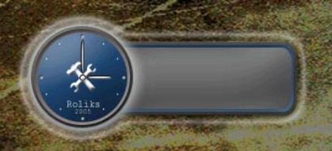
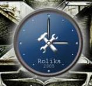
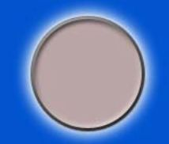
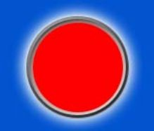
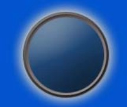
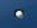
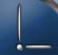
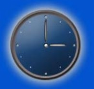
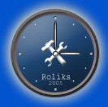

Сидел я как-то за компьютером и от скуки открыл свой старенький Photoshop - решил поколдовать. Вот что из этого получилось:


На следующий день я встал пораньше (часики, конечно, к этому времени пополняли корзину). И вот, что-то мне в голову ударило, решил написать статейку "Как я создавал время средствами Photoshop 6.0".
Первым делом достаём *.psd'шные часики из корзины. Открываем, смотрим на них и пытаемся нарисовать копию, по ходу дела записывая свои действия - для статьи.
Создаём изображение размером 144 на 136, далее - слой "КРОМКА", рисуем на нем идеальный круг (с помощью клавиши Shift). Щёлкаем дважды по слою "КРОМКА" и в его стиле задаём следующие параметры:
Внешний отблеск: Цвет: #FFFFFF (белый) Режим Смеси: Экран Полупрозрачность: 75% Шум: 0% Разброс: 20% Размер: 21пкс Контур: не трогаем Область: 50% Дрожь: 0% Фаска и рельеф Стиль: Поднятие вкладыша Техника: Сглаживание Глубина 56% Направление: вниз Размер: 9пкс Мягкость: 3пкс Наложение цвета Цвет: я выбрал #BAA6A6 Штрихование Размер: 3пкс Позиция: Снаружи Цвет: #555555
Наконец, я устал набирать эти свойства. Посмотрим, что получилось:


Теперь создаём слой "ОБЪЁМ", в нём тоже рисуем круг, но чуть меньше предыдущего, так чтобы он поместился внутрь вогнутости, которую мы видим в первой зарисовке.
Далее так же обрабатываем стиль слоя (двойным щелчком по слою "ОБЪЁМ"), устанавливая следующие значения:
Падающие тени: Режим смеси: умножение Мутноватость: 75% Угол: 1200 Расстояние: 0пкс Разброс: 0% Размер: 31пкс Фаска и рельеф Стиль: Внутренний скос Техника: Сглаживание Глубина 19% Направление: вверх Размер: 47пкс Мягкость: 12пкс Наложение цвета Цвет: я выбрал # 1E4572
Вот наше творение всё больше и больше начинает смахивать на часики:

Теперь рисуем центр: создаём слой "ЦЕНТР", помещаем в него небольшой кружочек в 10 пикселей и устанавливаем стиль слоя. Задаём следующие значения:
Фаска и рельеф Стиль: Поднятие вкладыша Техника: Сглаживание Глубина 69% Направление: вверх Размер: 1пкс Мягкость: 1пкс Наложение цвета Цвет: я выбрал # FFFFFF Штрихование Размер: 1пкс Позиция: Снаружи Цвет: # 000000 чёрный

Теперь приступим к рисованию стрелок. Создаём слой "СТРЕЛА", выбираем инструмент "Эллипс" (толщиной в 1-3 пикселя) и устанавливаем следующие параметры в стиле слоя:
Фаска и рельеф Стиль: Поднятие вкладыша Техника: Сглаживание Глубина 69% Направление: вверх Размер: 1пкс Мягкость: 1пкс Наложение цвета Цвет: я выбрал # FFFFFF Штрихование Размер: 1пкс Позиция: Снаружи Цвет: # 000000 чёрный
Далее копируем этот слой и с помощью произвольной трансформации поворачиваем его куда угодно:

Рисуем точки циферблата: 3, 6, 9 и 12 часов. Создаём слой, рисуем шар в два или три раза меньше центрального шара и задаём следующий стиль слоя:
Фаска и рельеф Стиль: Поднятие вкладыша Техника: Сглаживание Глубина 81% Направление: вверх Размер: 2пкс Мягкость: 0пкс Контур Контур: Ring - Double (он стандартом идёт) Область: 50% Наложение цвета Цвет: я выбрал # FFFFFF Штрихование Размер: 1пкс Позиция: Снаружи Цвет: # 8B8787
Далее копируем слой три раза, и расставляем точки на позиции 3, 6, 9 и 12 часов.
Обыкновенной кистью дорисовываем промежуточные точки: 1, 2, 4, 5, 7, 8, 10, 11 часов.
Расставляем их на свои места и смотрим, что получается:

Теперь приступаем к приукраске часиков. Нижнюю надпись "2005" я написал шрифтом Courier New (он не идёт со стандартной поставкой пакета Photoshop 6.0, так что вам придётся покопаться в Интернете и поискать этот шрифт, поверьте, он вам пригодится в будущем), размером 5pt. Надпись "Roliks" я написал этим же шрифтом, но размер другой - 7pt.
А вот и самое интересное. Вы думаете, я сам нарисовал этот гаечный ключ с молотком? А вот и нет - это шрифт такой, Webdings называется (его вы тоже можете найти в Интернете), это символ собаки @, размером 26pt.
Вот и получились такие замечательные часики. Далее выберем красивый фон и всё, спасибо за внимание.

ЗЫ: При написании статьи не пострадало ни одних настенных или каких-либо других часов. :)